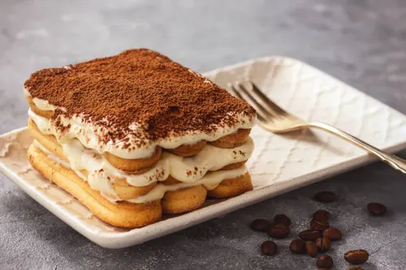

Recetas Caseras
Inicio
Chocolina
Turron de Quaker
Tiramisu
Lemon Pie
Tiramisu

Ingredientes:
500 gramos de queso-crema Mascarpone
6 huevos (de los que empleamos 6 yemas para el sabayón y 4 claras para montar)
150 gramos de azúcar
500 gramos Bizcotelas
4 cucharadas de Amaretto o el licor que nos guste
10 a 20 gramos de cacao puro en polvo
150 ml. de café
1 pizca de sal para montar las claras
Receta de sambayon:
1- Calentamos agua en una cazuela grande, debe estar caliente pero sin llegar a hervir. Mientras se calienta el agua vamos separando las yemas de las claras y apartamos en una taza. Las claras las vamos a montar posteriormente, reservamos.
2- Los huevos deben ser frescos y hay que manipularlos a temperatura ambiente. Mezclamos el azúcar, en un cuenco metálico, con todas las yemas. Empezamos batiendo en el cuenco fuera del agua y cuando comience a espumar introducimos el cuenco en la cazuela con el agua caliente.
3- Una vez dentro batimos con unas varillas manualmente o con las de la batidora hasta que las yemas doblen de tamaño. Vamos añadiendo poco a poco las cuatro cucharadas de amaretto y mezclando de manera envolvente hasta que estén incorporadas a la crema. Después de mezclar todo sacamos del baño maría y seguimos en frío hasta que nos quede una crema esponjosa y compacta. Reservamos para el montaje del tiramisú.
Preparacion del queso crema y cafe:
1- Montamos las claras a punto de nieve. Para ello introducimos las claras, a temperatura ambiente, en un bol en el que no haya ningún resto de grasa o no subirán. Les añadimos un pellizco de sal y empezamos a batir. Batimos hasta que las claras suban y queden firmes. Luego manejamos el merengue con una espátula de silicona.
2- Añadimos la crema sabayón que tenemos reservada a las claras montadas. Mezclamos de manera envolvente y con cuidado hasta que quede todo integrado e intentando que bajen lo mínimo posible.
3- Batimos el queso mascarpone hasta que quede cremoso (lo mejor es batirlo a temperatura ambiente). Mezclamos este queso batido con la crema anterior suavemente, intentando que no se baje la crema para mantenerla esponjosa. Reservamos.
4- Ponemos una cafetera con un buen café, el que más nos guste. Una vez preparado lo dejaremos enfriar.
Montaje final:
1- En el molde elegido, ponemos una capa de Bizcotelas. Regamos con el café para empapar los bizcochos. No debemos mojarlos demasiado, lo justo para asustarlos, no deben romperse.
2- Cubrimos con una capa de crema de queso y huevo y repetimos la operación hasta tener una o dos capas más, bizcochos mojados y capa de crema. El último paso es el del toque del cacao, imprescindible que sea cacao de calidad y amargo. Este ingrediente es el que da ese contraste tan importante en este postre.
3- Lo espolvoreamos sobre el postre con un colador para que no queden grumillos. Yo suelo dejar este paso para el final de todo. Justo antes de presentarlo a los invitados, porque al enfriar el cacao tiene peor presentación. Y lo fundamental, metedlo a la nevera para que enfríe. Yo lo dejo siempre de un día para otro.